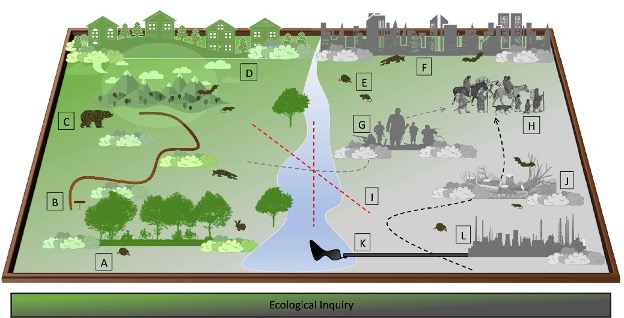
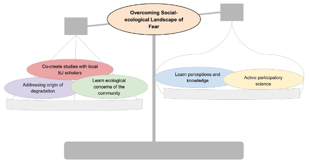

Fear. We’ve all felt it.
The snap of the twig outside your tent in the dead of night, the dizzying swoop of your stomach when you look over a high ledge. Your palms sweat, your heart races. Fear is designed to keep us alive–a mechanism we’ve evolved to assess threats to our safety.
Ecologists, in particular, think about fear in many ways. They’ve coined the term “landscapes of fear,” which is a framework to describe how prey perceive and respond to the risk of predation[1]). For example, to a deer, the best food in the forest might be in the center of the open meadow, but the deer is also aware that being in the open meadow makes them an obvious target to the mountain lion. While ecologists consider how fear affects the decision-making of species, new scholarship has posed a different perspective: how does fear affect the decision-making of the ecologists themselves?
A recent publication by Gabriel Gadsden, Nigel Golden, and Nyeema Harris repurposes this term into what they call social-ecological landscapes of fear, that is, a landscape of fear derived from the impact of negative human histories across space[2]. They call for the inclusion of negative human histories as important drivers of landscape change. This means considering the legacy of “mortality, extermination, subordination, and dispossession related to ethically controversial conditions, including overpolicing, redlining, racial or ethnic violence, corrupt governments, low social capital, and segregation” across space and time[2]. They also posit that failing to address negative human histories generates a place-based bias that affects where and how scientists conduct research.

This fear-based dismissal of landscapes manifests in how scholars decide what are considered intact environments. One example of social-ecological landscapes of fear causing place-based bias is the dismissal and erasure of land due to pollution. The case study I will use to discuss these ideas is uranium mining in the Navajo Nation.
The Impact of Place-Based Bias
When researchers do not perceive landscapes equally, then they do not study those landscapes equally. Place-based bias in environmental scholarship means conservation efforts are overvaluing places seen as “pristine” while undervaluing areas seen as “degraded.” For example, Chapin discusses how large conservation organizations have historically seen places where Indigenous people reside as unfit for conservation because they prioritize “their economic wellbeing over preservation of natural resources[5]. Indigenous nations want the autonomy to manage their lands and resources as they see fit. Yet because their decision-making on that land now marks it as less than pristine from the dominant global north perspective, it becomes understudied and undervalued. Their mere presence on the land adds it to the subconscious social-ecological landscape of fear that underpins dominant science research.
In the case of the Navajo people, the landscape of fear around the legacy of the mines has meant a lack of consideration of the ecological value of the region, such as its biodiversity and ecosystem services. When the dominant narrative of a place becomes entrenched in its complicated past, then it is easy to reduce that place down to its worst qualities. This reductionism occurs not only to the physical space itself but also to the people who occupy that space.
Place-based bias can also be readily found across urban and suburban landscapes. Community science data, for example, often display a strong bias toward areas the participants find enjoyable, aesthetically pleasing, or safe. This leads to an oversurveying of urban green spaces and an undersurveying of dense cityscapes[6]. Negative human histories of redlining, segregation, and discrimination shape what urban areas are desirable to conduct community science, and what urban areas are erased from the narrative. These factors contribute to the social-ecological landscape of fear that guides environmental scholarship.
Place-based bias from landscapes of fear is a subtle, pervasive bias across environmental literature. As researchers, we must acknowledge that true objectivity does not exist. There are always unknown unknowns that impact our decision-making. By calling attention to how fear colors our perception of landscapes, we can turn this place-based bias into a known unknown. While recognition of the impact of negative human histories on research is the first step, there are also solutions to mitigate the effects of landscapes of fear.
Solutions
Place-based bias generated from landscapes of fear can be mitigated by two broad paths: recognizing negative histories, and the collaborative cocreation of knowledge with community members. Recognizing histories starts with an acknowledgment of past harm. In environmental scholarship, a common example is land acknowledgments. Situating your research in the larger colonial context is a simple and effective first step toward shedding light on potential negative human histories associated with your work.
Community collaboration and cocreation go beyond acknowledgement and seek to create meaningful connections with the people who live in places of interest. It also involves scrutinizing underlying power structures and cocreating new methods that seek to rectify an imbalance of power. The rise of indigenous data sovereignty and data methods is an example of a framework that gives authority back to historically marginalized groups. This means bringing capacity for research to Indigenous communities, such as data collection, analysis, and reporting methods, and advocating for Indigenous research methodologies to be prioritized and respected in academic settings[7]. This also looks like shifting the narrative around the values that underpin data collection and use. For example, the CARE principles for Indigenous data governance center on collective benefit, authority to control, responsibility, and ethics[8].
As researchers from a settler colonial positionality, recognizing the data sovereignty of Indigenous peoples and prioritizing CARE principles in our underlying framework of data science is the first step toward cocreating knowledge with Indigenous communities. However, it is important to mention that these things only matter if you have been invited in. The legacy of colonialism is fraught with violence. Approaching collaboration from a place of humility, introspection, and respect is necessary to ensure collaborative efforts don’t reproduce harm.

These principles of acknowledgement and cocreation apply to all community groups that exist in spaces impacted by negative human histories. As environmental scientists invested in conserving the world around us–both people and place–we must listen and understand the stories of negative human histories across landscapes. Only by having the full perspective can we make informed decisions about how we study natural spaces. Often, we fear things simply because we do not understand them. But knowledge disrupts fear, and as researchers, we must respect and value the knowledge of those who live in the landscapes we study.
References
Citation
@online{oyler2024,
author = {Oyler, Haylee},
title = {What {You} {Don’t} {Know} {You’re} {Afraid} {Of}},
date = {2024-12-19},
url = {https://haylee360.github.io/posts/2024-12-19-landscapes-of-fear/},
langid = {en}
}